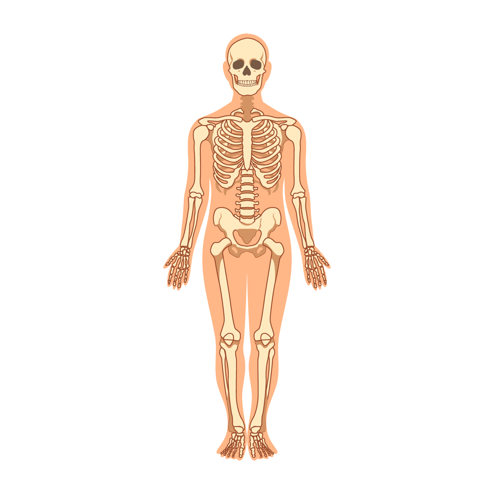
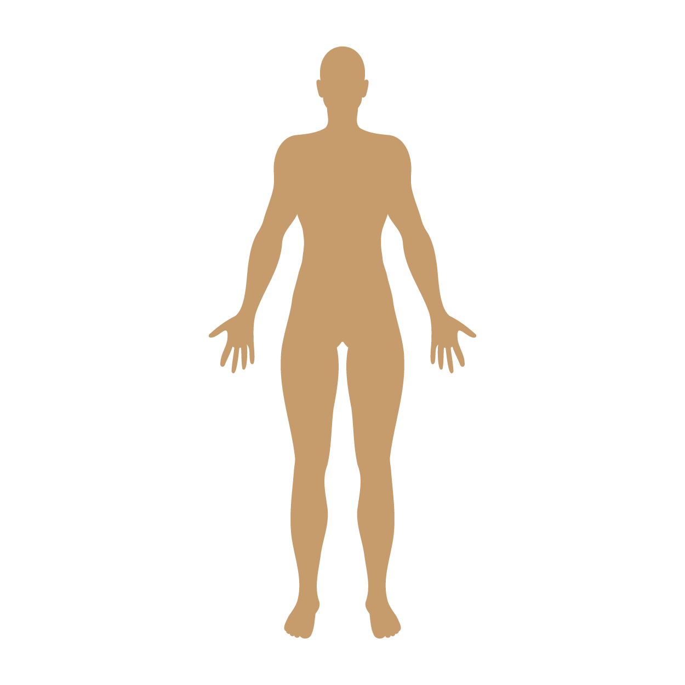
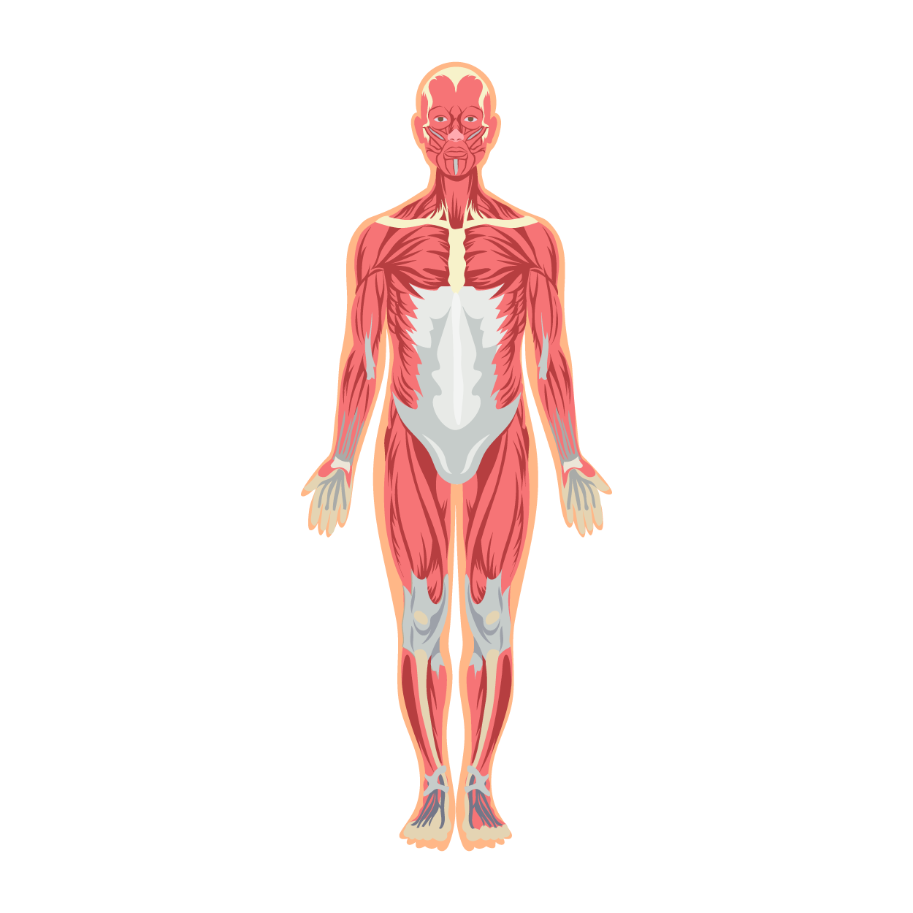

JavaScript's Relationship to HTML and CSS
Anatomy of a Web PageHTML, CSS and JavaScript work together to create the parts of a web page that users see and interact with in their browsers. Instead of being purely static, JavaScript gives users a dynamic web experience, adding animations and other interactive elements. A Buy Now button which takes action with a click, a form to login with your details to enter a site, or when modal slowly comes into view are all JavaScript.
One way to think about the relationship between these are the parts of a human body.
HTML: The Skeleton
Hypertext Markup Language (HTML) forms the bones of a website, defining the content and structure. Like a human body, HTML is a skeleton, holding everything together and keeping everything in its correct place. The HTML elements are like individual bones.
CSS: The Skin
Cascading Style Sheets (CSS) are the skin. Providing the aesthetics and physical properties, CSS is in charge of how a website looks. Everything from backgrounds, colour schemes, fonts, spacing, layouts and more. CSS can be written into the HTML, but best practice is to give it its own separate .css file for better flow and maintenance, allowing easier changes and preventing the repetition of code throughout the document.
JavaScript: The Muscles
 JavaScript are like the muscles, providing movement and actions for our head and limbs. This is the interactivity of the website, allowing for a dynamic user experience. Like CSS, JavaScript can be hard-coded into the HTML but ideally should have its own file to allow reusability and maintenance.
Control Flow, Loops, Arrays, and Objects
Control Flow
The order in which the computer runs code, to keep it as predictable as possible. This is normally from top to bottom, starting from the first line and ending at the last line. That is, until it hits any statement that changes the control flow of the program such as loops, conditionals, or functions like those in JavaScript.Loops
Loops allow for a specific step to be repeated, setting the start point, increments and stop point. This can save a lot of time, as the alternative would be to rewrite or copy and paste the code over and over every time it needed to be used.
In our human example, it could be likened to an action that is repeated daily, such as brushing your hair. i which stands for iteration is usually used, but here we can use the name brush.
for (let brush = 0; brush <= 10 brush++) {
// Brush hair with 10 strokes
console.log('Brush hair');
}
There are many different types of loops, but they all essentially repeat an action a certain number of times.
Arrays
An ordered collection of data, which can be thought of as a numbered list, that usually lives inside square brackets [ ]. The data can be accessed via its position, or index. Confusingly, arrays always begin at 0. Arrays can contain strings, numbers, booleans, objects, and even more arrays.
let face = [lips, nose, eyes]
Objects
Objects are labeled key/value pairs, with no specified order, stored within curly brackets { }. Here, wonderWoman is the name of the object. The key (age, pronouns, location) is the label for the corresponding value (1000, she/her, Paradise Island). This key/value pair is known as a property.
const wonderWoman = {
age: 1000,
pronouns: she/her,
location: 'Paradise Island'
}
Functions and Why They Are Useful
A function in JavaScript performs an action or calculation, requiring input and resulting in an output. A function will have an identifier/name of the function and brackets which may contain parameters. The statement inside the curly brackets defines the function. It must then be called to be put into action.
function sayHello() {
return "Hello Reader!"
}
// Will return "Hello Reader!"
sayHello()
Functions are useful because it can be called upon anywhere throughout the document, allowing for easy repetition as well as modification.
The DOM and DevTools
The Document Object Model (DOM) connects web pages to scripts or programming languages, commonly JavaScript. It represents the hierarchical structure of a document - typically the HTML document of a web page. The DOM can be thought of as a tree, with the end of each branch considered a node. These nodes contain objects, which include but are not limited to elements, attributes, text content and comments. Accessing the DOM means the document's structure, style, or content can be changed directly.

Developer Tools, or DevTools, is one way to access the DOM. It allows for testing and debugging websites and applications. In our human body analogy, it could be thought of as an x-ray or medical imaging device during surgery, allowing the insides to be visualised and then operated upon.